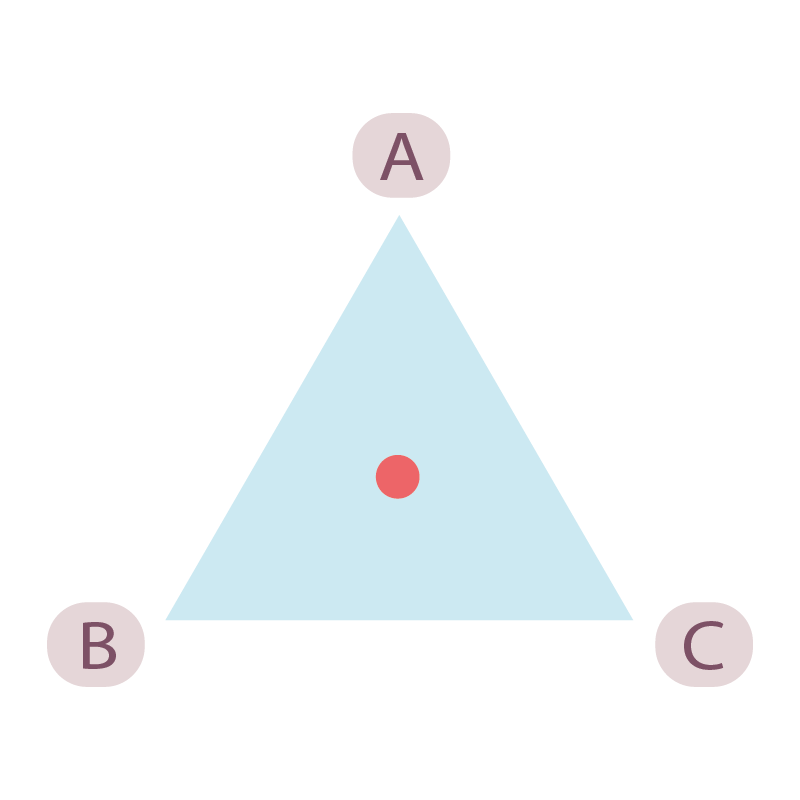
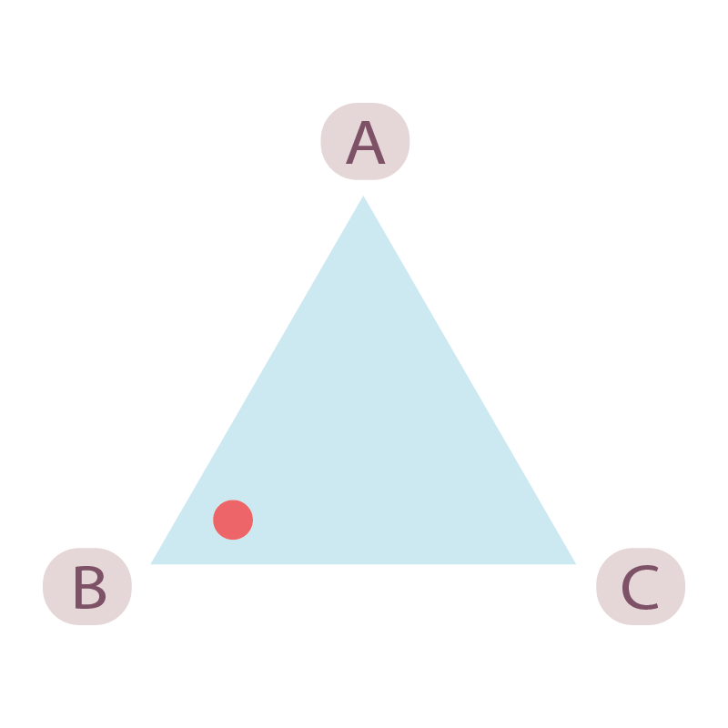
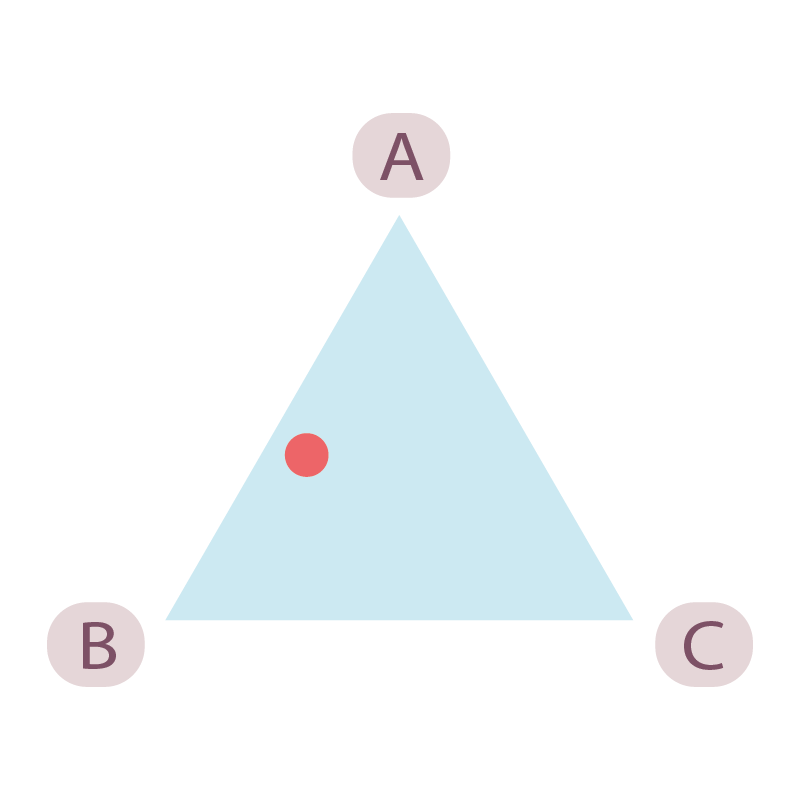

Drag the circle to describe the relative importance of each descriptor (see below).
Examples
 A, B, and C are all of equal importance.
 A and B are of equal importance and C is of little importance.
 B is of most importance.
Choose three descriptors that make your accommodation miserable.
Move the circle in the triangle to describe the relative misery of
the three descriptors i.e. move the circle closest to B if B makes you
the most miserable.
Adjust the slider to describe the intensity of the misery caused by
the descriptors i.e. the descriptors do not provide a lot of misery,
therefore move the slider to the blue region.
Step 1
Choose three descriptors that make your accomodation miserable
Step 2
Move the circle in the triangle to describe the relative misery of the three descriptors i.e. move the circle closest to B if B makes you the most miserable.